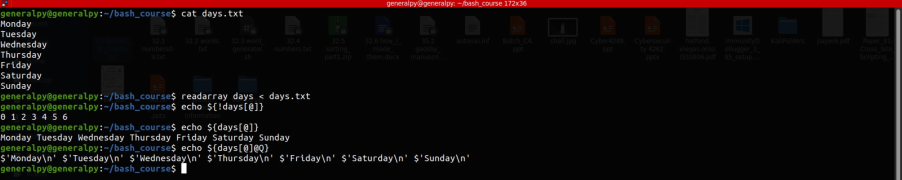
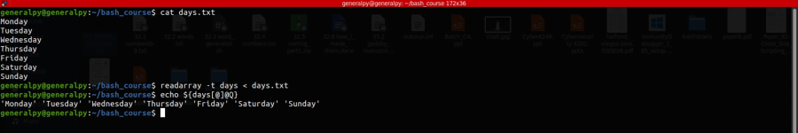

readarray command is used to read contents from the stdin and create arrays from it.
readarray creates array according to the new line character. Each lines end with new line so each line with the new line character is considered as array element.
readarray var < anything

We can see that how each line was converted into array element and we also saw hidden newline character in the elements.
We can remove the trailing newline character by using -t option.

We can also use output of other commands to create array but we cannot use pipes for that. When we use pipe, each command is run on its own subshell so the variables will not be visible to our original shell.
ls | readarray files
In above example, files array is only visible to the subshell, which itself gets terminated after the command has exited.
To use output of files, we have to use process substitution which is a method which creates temporary files for the process.
So the above command will be :
readarray files < <(ls)https://superuser.com/questions/1348948/cant-pipe-in-bashs-mapfile-but-why